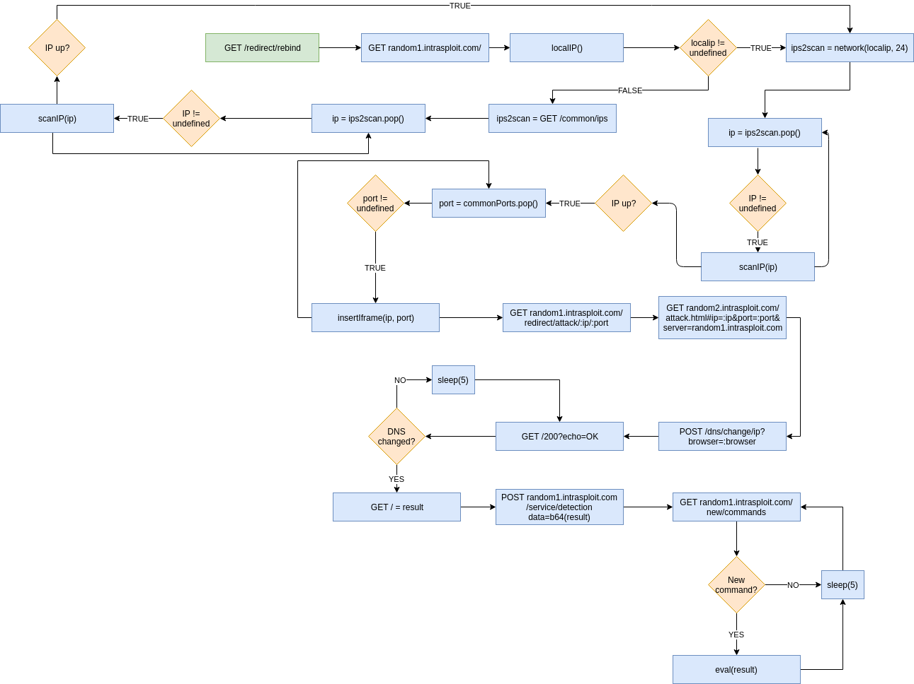

About DNS rebinding
DNS rebinding is a vulnerability present in, maybe all, modern browsers. The vulnerability can be used against services running on localhost or services running on the internal network, i.e. the webserver on your router configured with default username and password. DNS rebinding is essentially an attack that bypasses Same-Origin-Policy (SOP) to attack internal services.
The basic idea of how a DNS rebinding attack works (heavily influenced by how intrasploit solves it) is described below:
- Victim visits a web site controlled by the attacker.
- The attacker's web site inserts an iframe to a random subdomain of a domain the attacker controls.
- The browser will visit the web site running on the domain and evaluate any JavaScript.
- The JS-code running will notify the backend server to change the DNS entry of this subdomain and point it to 127.0.0.1.
- After some time, the DNS pinning employed by the browser will expire, the browser will then send a DNS request for the subdomain which has changed.
- Because the JS-code loaded uses the subdomain to send network requests and is still therefore within its origin, the browser allows the JS-code to send network requests to 127.0.0.1.
Flow chart of process
The flow chart below is an outline of how intrasploit works (green box is the start).
Some notes about the diagram:
- The diagram shows the flow of information seen from the client, it does not show what happens at the server.
- GET /redirect/* returns a HTTP redirect.
- POST /dns/change tells the server that the DNS entry should change to the IP specified.
